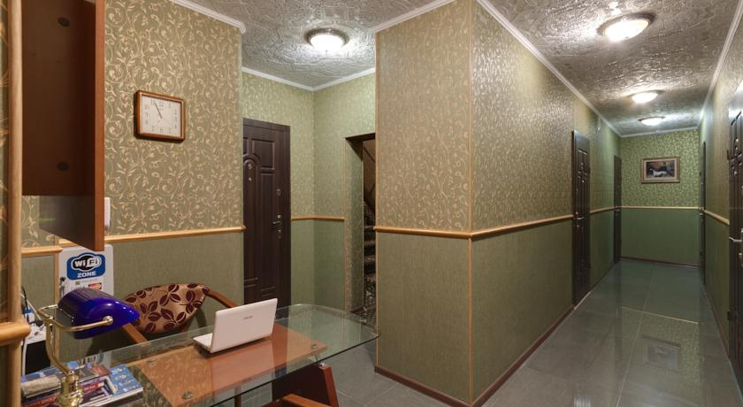

Киев
знаешь, я представила себе что мы встретимся с тобой где-то в центре. это может быть пешеходный мост, начала андреевского спуска или золотые ворота. в общем, то место, где можно прогуляться. и где есть такие уголочки где можно целоваться и мало глазеющих. и мы бы долго гуляли, разговаривали, смеялись, шутили, целовались. а потом перекусили бы. знаю один вкусный сэндвич-бар называется "мистер снек" если конечно он еще есть в киеве. о! и можно мак конечно же:) и есть еще куча всяких вкусных забегаловочек. потом бы продолжили гулять. возможно бы обошли центр киева. посотрели бы майдан и арку дружбы народов, софиевскую площадь и парк славы. мы бы гуляли весь вечер и всю ночь. встретили бы рассвет. и постоянно бы что-нибудь хомячили бы:) это была бы очень эмоциональная встреча. это такой убийственный вариант. я думаю что мы бы очень устали с такой прогулкой. поэтому возможно мы бы немного погуляли, перекусили бы, потом засели бы на какую-нибудь лавочку и сидели бы там до ночи. разговаривали, хомячили, целовались и обнимались. а потом нашли бы какой-нибудь маленький уютный отельчик и сняли бы там номер. все было бы цивильно и сбылась бы наша мечта. мы бы уснули и проснулись вместе. а в третьем варианте была бы жаркая ночь. в любом случае, какой бы вариант не выбрать, все равно это была бы самая волшебная ночь! и знаешь я так хочу чтобы это сбылось...так было классно об этом мечтать. и все мечты путались, столько всего представлялось, но я упорядочила это в нормальную человеческую встречу. главное что в основе всего этого лежала ночь. вернее вечер и ночь с рассветом.
Не, ну это уже аномалия. Сегодня пол ночи смотрела сон о том, как шла по пляжу и наткнулась на тебя в полном составе семьи. И как мы познакомились, и как ты потом зачем-то пришел ко мне в гости и познакомился с Викой (!) Кароч белеберда. А еще у тебя были светлозеленые ногти и татуировка на запястьи в виде каких-то красивых желтых цветов ??
Фантазия
ночь... комната с белым постельным бельем, приглушенным светом от прикроватных светильников, а в окно светит луна. я лежу на кровати, зарылась в одеяло, жду тебя чтобы засыпать. ты приходишь из ванной комнаты и ложишься ко мне. встреча взглядов, и мы так долго лежим и смотрим друг на друга. ты гладишь меня по голове, волосам, щекам и шее. а я обнимаю пальчиками твою вторую руку, которую ты положил себе под голову. ложусь к тебе поближе и прижимаюсь. ты начинаешь гладить меня по спине и скользишь по попе. а я нежно целую твои губы и глажу твои щеки.так приятно колется твоя щетина... из-за того что мы абсолютно голые, твои пальчики побежали играться. проснулся друг. я тоже не сдерживаюсь и мои ручки тоже побежали вниз играться. мое дыхание замирает на секунду когда пальчики оказываются внутри, а потом начинаю дышать чаще и горячей. мы окунаемся в эту приятную страсть. потом ты переворачиваешь меня на другой бочок, так чтобы я была спиной к тебе и нежно входишь в меня.... то что было дальше было очень сладко... такое прекрасное завершение вечера. после всего мы засыпаем и я забрасываю ножку на тебя.
хоть мы и понимаем друг друга, сущности ведь у нас разные... как бы понять твой фокус хоть немного... мне бы тогда пришло решение сразу! цель блин... цель... то чувство, когда беспомощный... потому что в силу своих мозгов и женского начала не можешь нормально понять ситуацию....
Как всегда сначала я открываю блокнот и начинаю что то нибирать тут. Потому что дальше даже не уверен в том что отправлю тебе это. но я наверное должен быть с тобой искренен до конца. но чем дальше тем мне это дается почему то тяжелей. когда мы познакомились я изложил тебе себя болностью. потому что мы не были знакомы и было как то легче. а теперь чем дальше тем сложней. нет я с тобой искренен до конца и поэтому наверно я набираю эти буковки. Скажу сразу что сегодня наверно так получилось. не часто так долго и красочно наверное. но просто был настрой и было время и мы практически не спешили и могли себе это позволить. я не знаю как будет дальше и будет ли вообще. но как то оно будет точно. в общем если в следующий раз будет не так не обижайся короче ))) Но не это я хотел тебе сказать. Блядь как же это вообще изложить.... Меня накрывает по одной дурной причине. Понимаешь. бляяяяяяяяяяяяя Короче. Чем больше я смотрю на тебя тем больше вижу в тебе этих двух. Ты говоришь как она, ты ходишь как она, ты одеваешься как она, ты даже сегодня морозилась в плазе как она.... это раз. А от другой эта обезбашенность посреди парка, эта ласка после секса, это простота отношения к этому процессу.... короче как меня накрывает даже когда я тебе это сейчас пишу. Но дело не в этом. Дело в том что я тебе говорил и повторял не однократно что они научили меня любить и чувствовать. ну покрайней мере я жил с этими мыслями всю жизнь. а тут мне встречаешься ты!!!!! в которой сразу эти две. и я не вспоминаю их. я вспоминаю то что я чувствовал и те ощущения... а ваш профиль.... вы как две капли похожи если в профиль..... и он гуляет со мной второй день по киеву.... блин.... какие то слезы непонятные навернулись. короче ты почитай это пока...ты не смесь их двоих. еще раз повторяю ты смесь всех моих самых ярких чувств в этой жизни помноженные на твою уникальность
наглядные волны в общении. вчера и сегодня. мне иногда кажется что ты учишь меня им. или просто пытаешься специально доконать, чтобы я сдалась. или проводишь на мне эксперимент и улыбаешься когда я что-то пишу тебе в ответ. какой-то метод кнута и пряника. и вот сейчас я пишу тебе свои мысли и не знаю как ты отреагируешь... если раньше как-то было что-то понятно, то сейчас ничего... и плохая волна так душит. как будто пытается убить. а я как любое живое существо хватаюсь за жизнь, за соломинку и пытаюсь выжить. а когда хорошие волны, то тогда взлетаю, но уже есть страх. боюсь радоваться, потому что в любой момент могу шмякнуться об землю.
Пауза длинною в жизнь
Хорошо что наше общения после всего сложилось именно так. Ты знаешь это позволило мне посмотреть с другой позиции на все. Ты готовишь что я могу говорить тебе все и не держать это, поэтому за ранее прошу прощения если в какой то степени мои слова покажутся тебе грубы или не справедливы, но то что я сейчас напишу это результат послденей недели проведенной на едине с собой Первое это мои волны. Было легко предугадать что после той безумной волны проведенной в Киеве будет обязательно что то противоположное. Собственно это не заставило себя долго ждать. И меня накрыла волна сомнений и терзаний. Но в отличии от прошлых... ты всегда была рядом и ставила меня на место. Забивала негативный фон в моей голове. Сейчас я смог шагнуть дальше и разобраться в себе и в том что происходит. Финальная точка была поставленна вчера. Я забрел на страницу твоего мужа в контакте. Я думаю тут не надо описывать мое внутренее состояние... Зато я понял одну простую истину. Судьба меня поставила на роль всех моих бывших. Вернее я оказался там где до этого никогда не был. И я наконец то понял что чувствовали они... С одной стороны я востаргался твоим мужем и вашей семьей, то какая вы замечательная пара и как подходите друг другу. как весело проводите время и как добились всего вдвоем.... но с другой стороны меня просто выворачивало от того что я влез в это прекрасное!!! мне было так противно и до боли грустно... я даже не могу описать это чувство, но я четко ощутил себя на месте тех девушек которые были со мной рядом или которые меня любили... Теперь я понял почему когда они рассказывали мне о своих снах всегда упоминали сюжеты с женой. я думал это были просто случайности, а нет это большая закономерность. Вот и мне всю ночь снился непонятный сюжет в главной роли которой была не ты а твой муж. я уже не говорю о том что проснулся в холодном поту и весь день хожу как завороженный. я не знаю что со мной происходит да и сил нет разбираться. То что было в Киеве это слишком было хорошо что бы казаться явью. я даже не могу вспомнить детали или посмотреть на это целостно. это как сноведение которое подарило яркие краски и о котором остается только мечтать. ты часто говоришь о том что нам нужно работать над нашими отношениями. над отношениями которых нет. вернее они есть. у тебя свои отношения у меня свои. наверно над ними нам и следует хорошо работать. а я для тебя или ты для меня это всего лишь очередное испытание этих отношений, о которых в скором будущем будем вспоминать с легкой улыбкой. Мы должны найти в себе волю и признать что это все было ошибкой. Ошибка времени или злая шутка судьбы. Я не хочу разрушать вашу семью. Не хочу что бы ты предавала человека который тебя так любит и "носит на руках" не хочу .... много чего не хочу. надеюсь ты меня поймешь, если любишь Постарайся не писать мне и не звонить. Я постараюсь тоже.
Очень жаль
Да что с тобой происходит господи боже ты мой!!!!!!!!!!! да пойми же ты наконец!! ничего ты не разрушаешь! ничего! ты только приумножаешь все! ты окрашиваешь мою жизнь в другие цвета! прекрати мне говорить слова прощания, это просто невозможно!! каждую ситуацию можно рассмотреть под несколькими углами! посмотри, сколько человек тебе давалось и все не то и не туда! тебе хорошо со мной, признай это наконец! и есть отношения!! пусть они как ты говоришь неправильные, ну и хрен с ними!!! важно то, что ты чувствуешь в этот момент! не нужно ни от чего отказываться, никто не говорил что будет легко! это то что нужно тебе, это то что нужно мне! не лишай нас этого! если так разобраться, это тоже своего рода предательство того, что было послано судьбой. все эти совпадения, что случайность разве?? и если любишь, то почему не можешь просто быть с человеком? на расстоянии, будучи в семье и вообще не важно как!!! жизнь не щедра на хороших людей и если они попадаются, разбрасываться ими просто преступление!! ты хороший человек и я не хочу и не собираюсь тебя терять, просто потому что существуют какие-то предрассудки мать их!!!! как хорошо, что меня дернуло спуститься к вай фаю! я даже чувствую это все!!! что снова предрассудки?? прекрати играть с жизнью! потом так по башке даст, будешь жалеть! уж поверь мне! если попадается такой человек, нужно обязательно выстраивать с ними отношения, нужно!! давай, хватит лениться!! услышь меня! ты же знаешь что я тебя люблю! война и так отобрала у меня дорогих людей, слава богу все живы, но так далеко, что просто иногда хочется на стену лезть!! что ты специально хочешь сделать?? заставить себя и меня страдать? ЗАЧЕМ???????? зачем?? когда можно наслаждаться друг другом, улаживать непонятки и просто радоваться жизни!!!! я люблю тебя! я хочу тебя в своей жизни, ты уже в ней!! поздно включать заднюю!!! все! поздно! пожалуйста, не теряйся и не упрямься! ты потом поймешь, что переборов себя, получишь большее! и может ты остался наедине с собой для того, чтобы не убивать все это, а чтобы без моей помощи понять, что все это то, что нужно тебе в жизни!!то что было в киеве было реальностью!!!! а не сном!! да реальностью! прими ее! и научись радоваться!!! потому что ты заслуживаешь радость, а я могу тебе ее дать!!
CБ 11:34 доброе утро! ты снился мне сегодня всю ночь
СБ 17:23 ты все таки твердо решил? я просто не могу в это поверить.... капец... ну зачем ты так? почему так решил?почему ты меня игноришь? пожалуйста, я очень тебя прошу! не нужно все заканчивать и все рушить! я люблю тебя! жаль...
я люблю тебя и всегда буду любить! береги себя и семью. я позвоню тебе, как вернусь в донецк. потому что так просто не уйду и не отпущу тебя. сейчас прекрасно понимаю, что ничего не могу сделать. мне нужно справиться с этим пеклом в груди и душащими слезами. надеюсь, тебе легче от того что ты попрощался со мной. мне же остается просто терпеть. я правда очень люблю тебя! мысленно смотрю сейчас на тебя, а ты держишь в ладошках мои щечки и нежно целуешь. я люблю тебя! и никто не отнимет у меня это теплое чувство! я люблю тебя!
Я понял одно. сделал это для того что бы сохранить в себе те прекрасные моменты которые были намедне. Ведь в силу своих обстоятельств я никогда не запоминаю плохое. И хоть мне сейчас невынасимо тяжело и муторно я понимаю что результат запомнится иной. Она останется в моем сердце прекрасным человеком Мне наверно важна эта пауза до октября. Ведь как я пойму что это были действительно чувства любви а не очередное увлечение. В этом есть и риск. Может быть она забудет меня и больше не захочет со мной связыватсья. А второй риск это то что у меня может не хватить просто духу написать ей сново или начать нормальный разговор. Но в любом случае какой бы не был результат она останется вмоей памяти светлым и ярким человеком. А если все захлестнет с новой силой то это будет в двойне красочнее